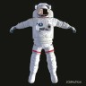

 Astronaut - EMU suit - Rigged
VERY IMPORTANT LICENSE INFORMATION:
This file has been released by jgilhutton under the following license:
Creative Commons Attribution 3.0
You can use this model for any porposes according to the following conditions:
- You MUST give attribution/credit to jgilhutton.
Blend information
- Name: Astronaut - EMU suit - Rigged
- Author: jgilhutton.
- Premalink: http://www.blendswap.com/blends/view/73994.
- For Blender 2.52 and up.
-
Description:
Hola amigos! Este modelo lo pueden dejar con bajos polígonos o con el multir esolution porque no lo apliqué. Hay algo de escultura hecha solo visible con el multiresolución puesto en nivel 3. Si dejan el modelo con bajos polígonos, te ndran que modificar un poco las texturas normales, ya que se generan algunos pro blemas y hace que  se vea todo oscuro. Está completamente riggeado y la armadu ra está en el layer 2. Los dedos tienen algún problema con la posición de los huesos pero en general está bien. Por favor, agradecería que si usan este mod elo me manden un link con su trabajo para ver las composiciones que vayan hacien do. Agradecería que me den crédito también. Saludos y happy blending. JUAN IG NACIO
=================================================================== ===
Hello friends! You can use this model with low poly settings for game s as well as high poly for still images. It has an unapplied multiresolution mod ifier. There is some sculpting done, only visible with multiresolution level 3 I f you use it with low poly settings, you may have to tweak the normal textures a little with the texture paiting, due to some artifacts generating black spots w ith the wrong ilumination. It's completely rigged and the armature is in the lay er 2. There is some problems with the fingers but, overall, it's ok. I'd be grat efull if you send me a link of your job if you use this model, just to see your compositions. Please, give me credit for my job if you use this .blend file. Gre etings and happy blending. JUAN IGNACIO
Creo que están todas las textura s packeadas, en caso contrario notifíquenme y las subiré inmediatamente. /// I think I packed all the textures. If not, please notify me and I'll upload them immediately.
//UPDATE/// I fixed at least three bone problems such as bone roll and parents. Also added the mai n control so you can move the model all over the  scene.
///UPDATE 2/// Helmet controls added. Model resized to real scale. Shoulder logos now defo rm with the armature but still hace some problems Minor tweaks on normal maps and topology.
///ACTUALIZACION/// He arreglado como mínimo tres problemas con los huesos de la armadura tales como inclinación y parentezco. Agregué también el con trol principal para moverlo por la escena.
///ACTUALIZACION 2/// A√±adidos los controles del casco. Correcci√≥n de escala del modelo. Insignias de l os hombros se deforman con los huesos pero presentan problemas todav√≠a. Correcciones menores en los mapas normales y topolog√ ≠a.
Help us moderate this blend
If you encounter any problems with this blend including:
- Broken links to other blends.
- Missing textures and other internal assets.
- Innacurate preview images on the site.
- Render results are not the same as advertised by the author.
- Illegal distribution of third party files/assets.
- Ripping from a game or other 3D assets library.
- Uncredited or incorrect use of CC licensed assets.
- Other issues 1
Please submit a report of the problem from here. PROVIDE EVIDENCE OF THE PROBLEM (screen shots, renders, links, etc.) so we can solve the issue.
Notes
- Please do not report blends when you don't know about a feature in Blender. Authors will get a worrying email when their blend is reported, so please avoid them the hassle. If you have a question about how to use a blend please first leave a cool comment in the comment section instead of sending a Report, Reports are for serious stuff. Thanks.